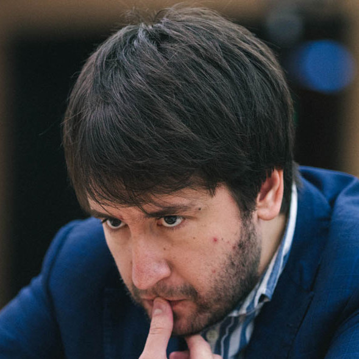
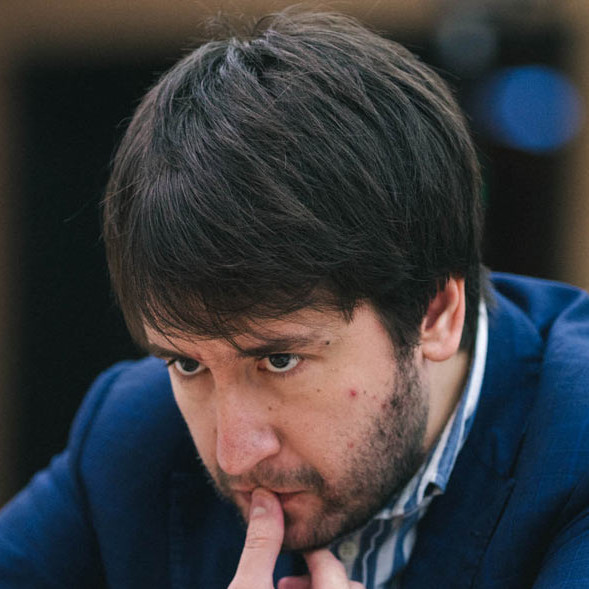

Фабиано
Каруана -
Теймур
Раджабов
12 партий:
4 победы, 8 ничьих, 0 поражений
5 партий белыми, 7 чёрными
| № | Цвет | Итог | Турнир | Год |
| 1 | ◼ | 1/2 | Халкидики, командный ЧЕ | 2011 |
| 2 | ◼ | 1/2 | Вейк-ан-Зее | 2012 |
| 3 | ◼ | 1/2 | Москва | 2012 |
| 4 | ◻ | 1 | Цуг, Гран-При ФИДЕ | 2013 |
| 5 | ◻ | 1 | Бухарест | 2013 |
| 6 | ◼ | 1/2 | Бухарест | 2013 |
| 7 | ◼ | 1/2 | Шамкир | 2014 |
| 8 | ◻ | 1 | Шамкир | 2014 |
| 9 | ◼ | 1/2 | Баку, Гран-При ФИДЕ | 2014 |
| 10 | ◼ | 1/2 | Ташкент, Гран-При ФИДЕ | 2014 |
| 11 | ◻ | 1/2 | Вейк-ан-Зее | 2015 |
| 12 | ◻ | 1 | Шамкир | 2016 |